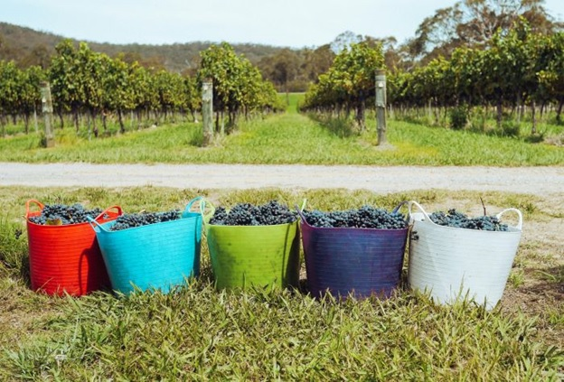
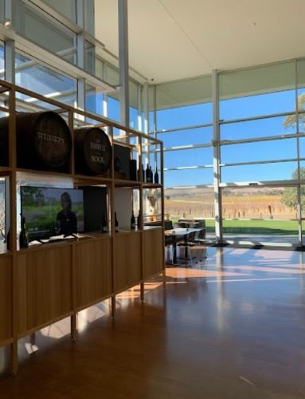

October 19, 2024
Exploring Barossa Valley and McLaren Vale on a Winery Bus Tour
Adelaide and its surrounding areas are a popular destination for wine-loving adventurers. Few destinations rival the allure of the region’s natural landscape and the quality of its premium wines. It’s no surprise that tourists from within Australia and all over the world flock to the regions of Barossa Valley and McLaren Vale on a winery bus tour to discover why this area is known as the wine capital of Australia.
Guide to Exploring Barossa Valley
Barossa Valley is the oldest wine region of Australia. If that isn’t enough to convince you to embark on a Barossa Valley wine tour, it is also abundant in natural beauty and cultural significance.
But before you book a bus tour for hire to Barossa Valley, it’s important to plan when to go. When you visit during Spring from September to November, expect the most splendid view to greet you as the wildflowers bloom and the area hosts many local festivals. You can visit many vineyards and cellar doors that host outdoor picnics or sample as much wine as you can handle in beautiful weather.
Fall is another suitable time to visit the Barossa Valley on a winery bus tour in Adelaide. The vineyards are covered in the stunning colours of yellows, reds, and oranges. Many winemakers and cellar doors also provide visitors insight into the winemaking process, from grape selection to fermentation.
Harvest season in Barossa Valley is from late February to April. Hence, booking a Barossa Valley wine tour is especially great at this time, as the region is abuzz with activity. It is a unique experience to partake in the harvest, which includes a wine-sampling session and live performances.
What to Do on a Barossa Valley Wine Tour
Each bus tour is different but there are many exciting activities to look forward to when you join a winery bus tour in Adelaide to the Barossa Valley.
Wine tasting is first on the list of things to do, so visit as many wineries as possible on your tour. From well-known wineries to small wineries and hidden gems, be sure to check them out so you can participate in tastings and find your favourite wines.
Visiting wineries entails more than just wine tasting and sampling, as they are filled with art and cultural activities. You can visit art galleries and cultural studios that showcase the best works from local artists. It’s a great opportunity to learn about the thriving art scene in the Barossa Valley. Tourists can buy some crafts and arts as souvenirs of their time in the Barossa Valley.
If your little ones tag along with you on this Adelaide bus tour, several wineries in Barossa Valley offer family-friendly activities. A winery bus tour can be transformed into a family affair with animal encounters, educational tours, and outdoor picnics with a view.
Finally, no wine tasting is complete without trying the best local food and cuisine. Barossa Valley is home to farm-to-table restaurants or cellar doors with their own restaurants. Plus, the area is abundant in orchards and vineyards that grow their own food in addition to making wines. Indulge your palate with the delicious pairings of wine and local produce. From fresh fruits to artisanal cheeses and breads, these gourmet treats are worth travelling to Barossa Valley for.
Adelaide Hills – this region is home to crisp Chardonnay and Sauvignon Blanc, perfect for white wine lovers.
Barossa Valley – this region boasts their bold Shiraz, a must-see for those who love red wine.
Exploring the McLaren Vale Wine Region from Adelaide
McLaren Vale is another familiar name among the wine-seeking adventures in Adelaide. Its history goes back to the mid-19th century when an English colony was established in South Australia. The first full-scale winery in McLaren Vale was established in 1850, and it started producing fortified wines in the late 19th century.
While Barossa Valley boasts a continental climate, the Mediterranean climate in McLaren Vale has produced the best red wines in the region. In particular, McLaren Vale is known for its Shiraz, a prized Australian red grape variety. The difference with the Shiraz from McLaren Vale is that their red wines have a softer, more subdued taste with a hint of spice.
In addition, the various micro and meso climates, combined with the varied elevations, have resulted in more wine varieties being grown in McLaren Vale.
McLaren Vale is located between the Gulf St Vincent beaches and the Mount Lofty Ranges. It is approximately 45 minutes from Adelaide, making it accessible on a bus tour for hire. This hidden gem in South Australia boasts 80 cellar doors and vineyards. It is also home to world-class restaurants and accommodation options.
Here is how you can pair food and wine in Adelaide’s gourmet scene.
Wine Varieties of McLaren Vale
Booking a McLaren Hills wine tour promises an exciting journey for your palate. Any wine-loving tourist should not miss sampling or grabbing a bottle of the region’s most famous wine varieties:
Shiraz
Cabernet Sauvignon
Grenache
Chardonnay
Merlot
Things to Do in McLaren Vale
Like Barossa Valley, McLaren Vale offers various activities during the McLaren Hills wine tour to help you immerse in the local area and its people. The most popular activity on a winery bus tour is walking the Shiraz Trail. Exploring the vineyards and stopping by the cellar doors to learn about the local wine produce is the best way to get to the source of each bottle.
A visit to a unique winery in McLaren Vale, d’Arenberg Winery, offers a unique art and wine experience. It is home to an avant-garde structure known as The Cube and has a museum on-site. When you are done being in awe of the impressive artwork, you can head to the tasting room to fill your longing for premium wines.
Barossa Valley or McLaren Vale: Which to Choose?
Deciding between a winery bus tour in Adelaide to the Barossa Valley and McLaren Vale is no easy feat. But why choose one when you can visit both?
The Barossa Valley and McLaren Vale regions have successfully carved their niches, each with unique appeal, making them worthy stops on winery bus tours. But if you have to choose just one, familiarise yourself with the wine varieties available in each region and your preferred activities so you can pick the best itinerary that will make the most of the regional offerings.